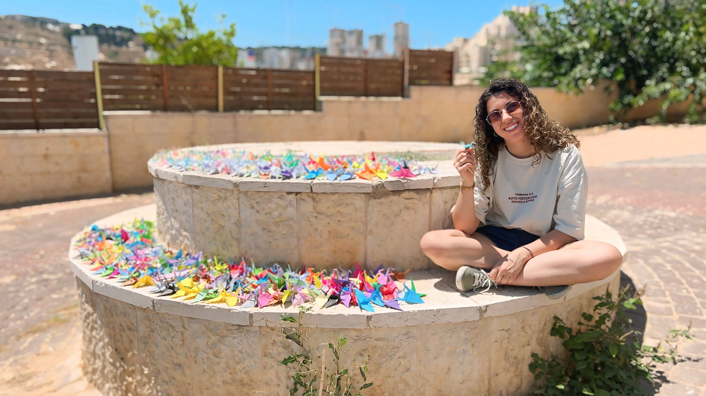

Einav Yehezkely
Computer Science & Cognitive and Brain Sciences
About Me
A third-year undergraduate student at the Hebrew University of Jerusalem, pursuing a double major in Computer Science and Cognitive and Brain Sciences.
I am driven by a curiosity to explore new fields and solve complex problems, with a strong desire to make a positive impact on the world. I bring strong self-learning skills, leadership skills, and a commitment to excellence.
Currently, I'm a student researcher in a lab focused on computational neuroscience and cognition. My research involves building computational models of cognitive functions using deep neural networks, aiming to better understand how complex behaviors emerge from brain-like architectures. In particular, I study representation stability through drifting stimuli — how stable internal representations are maintained in the face of continuously changing inputs.
In my service at IAF, I was responsible for E-learning development across multiple training units, as well as general graphic design within my own unit. I am experienced in Articulate Storyline, Adobe Illustrator, Adobe Animate, After Effects, Photoshop, and Premiere Pro. During my service, I became a commander and course instructor and was responsible for over 50 soldiers, primarily teaching them Graphic Design, UX/UI, and E-learning methods to optimize the IAF’s operations and training courses. In addition, I was responsible for redesigning the course curriculum and syllabus. This involved developing new lessons and conducting research on emerging topics. At the end of my service, I was recognized as the top commander of my unit.
I have a High School Diploma focused on Computer Science, Chemistry, Biology, and Literature from IASA - Israeli Arts and Science Academy. I graduated as a top student.
Education
The Hebrew University of Jerusalem
2023 – PresentBachelor's Degree, Computer Science and Cognitive and Brain Sciences
IASA – Israeli Arts and Science Academy
2018 – 2021Top student. High School Diploma, Computer Science, Chemistry, Biology, Literature
Employment
Student Researcher | Edmond and Lily Safra Center for Brain Sciences – ELSC
04/2025 – PresentA student researcher in a lab focused on computational neuroscience and cognition. My research involves building computational models of cognitive functions using deep neural networks, aiming to better understand how complex behaviors emerge from brain-like architectures.
Youth Counselor | IASA
08/2025 – PresentGuiding and supporting a group of 11th-grade students in a residential setting for gifted youth. Responsible for their emotional well-being, group dynamics, and daily life in the dorms. Work includes personal mentorship, leading group activities, handling challenges, and being a consistent adult presence throughout their formative years.
Overnight Youth Counselor | IASA
12/2023 – 07/2025Evening and night shifts in a residential program for gifted and high-achieving youth. Responsibilities include monitoring attendance, staying on-call throughout the night, and maintaining meaningful connections with students.
Military Service
Commander & Course Instructor | IAF
08/2022 – 08/2023Was responsible for over 50 soldiers, primarily teaching them Graphic Design, development of E-learning solutions, knowledge management, and implementation of computer systems, to optimize the IAF's training courses. I also developed lesson plans and at the end of my service, was recognized as a top commander of my unit.
Graphic Designer & E-Learning Developer | IAF
08/2021 – 08/2023Development of advanced digital learning tools for various training units in the Air Force, as well as general graphic design. Broad practical and instructional experience with Adobe software and Articulate Storyline.